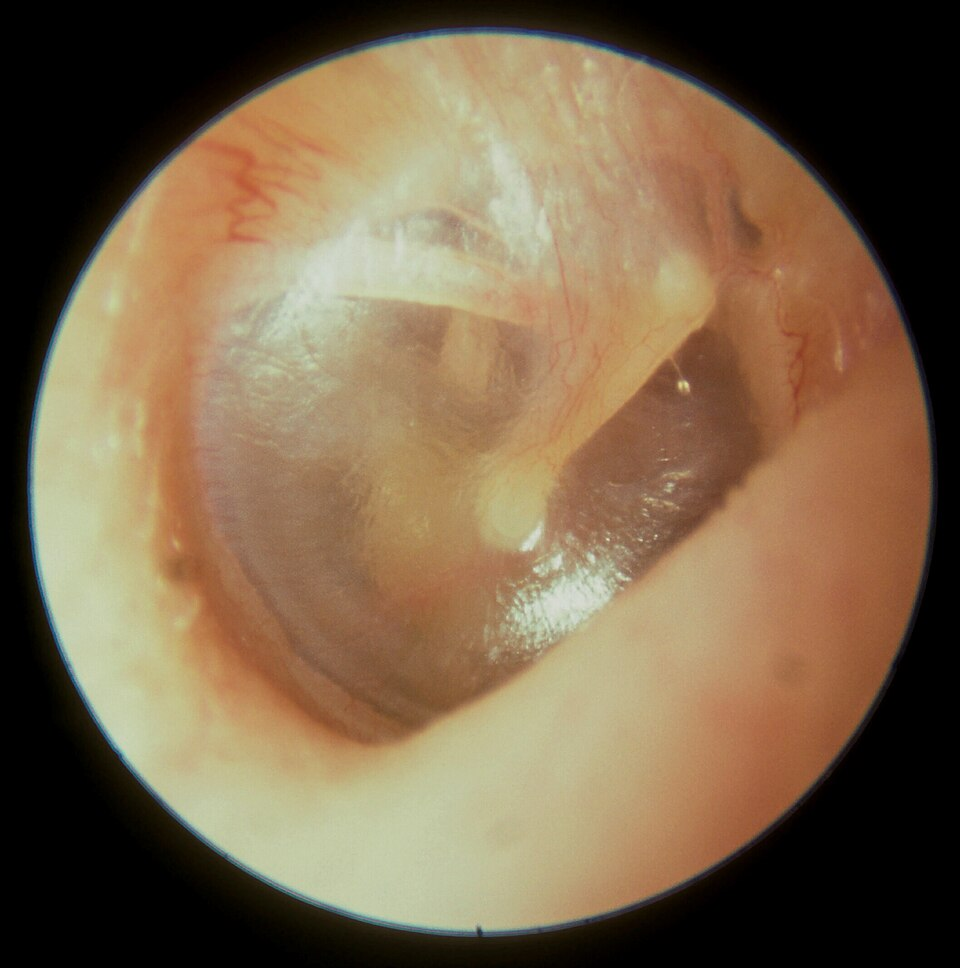
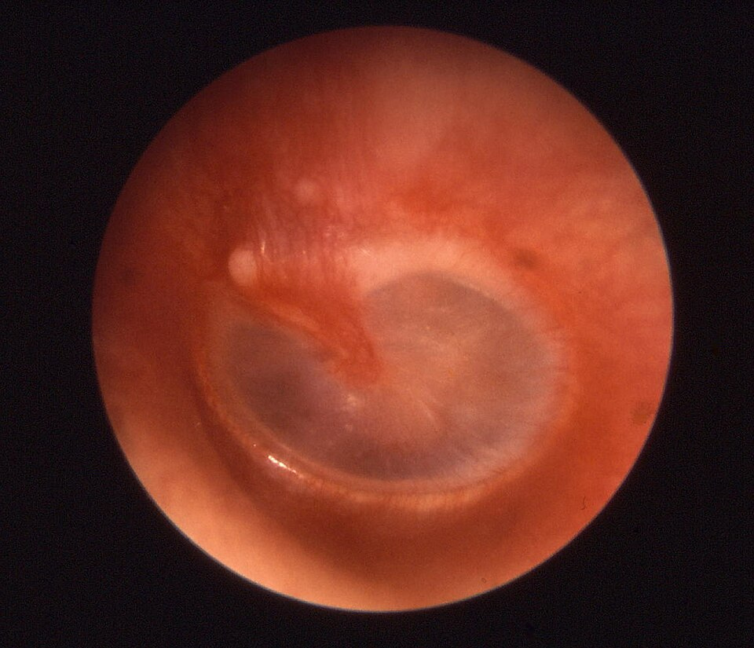
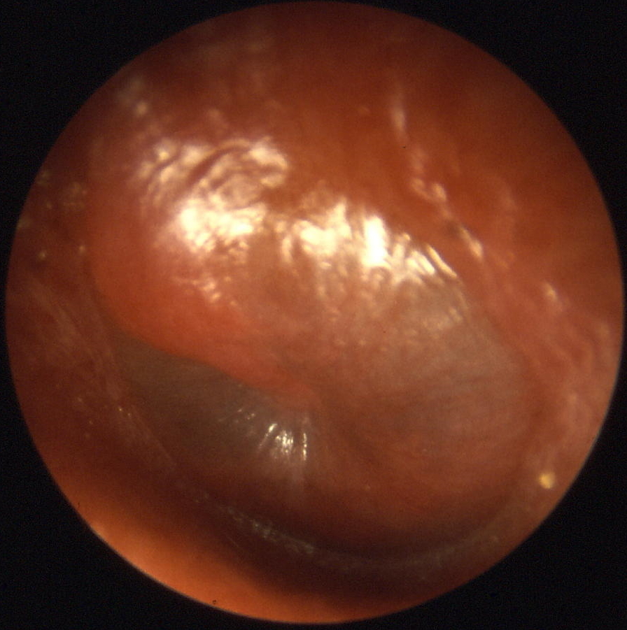
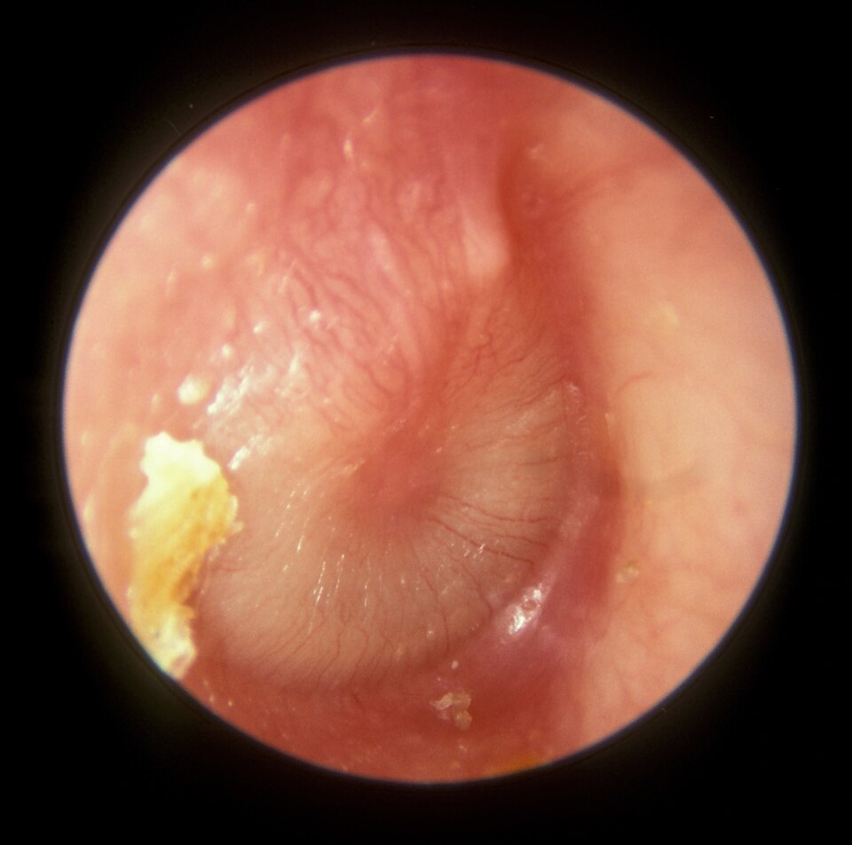
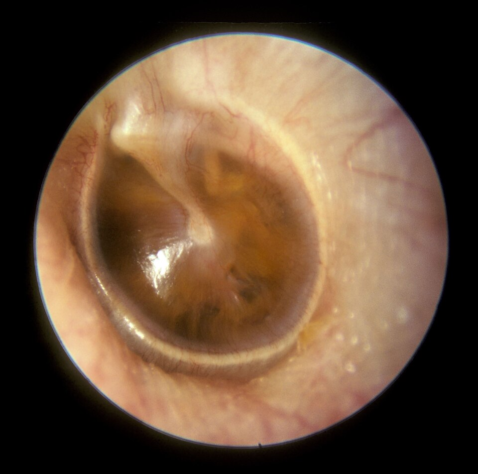

兒童中耳炎與中耳積液
中耳炎是小朋友感冒後最常見的併發症。了解它怎麼發生、什麼時候需要吃藥、什麼情況要趕快回診，就能陪孩子安心度過。
1中耳在哪裡？
耳朵分成外耳、中耳、內耳三段。鼓膜後面有一個小空腔叫做中耳，裡面有三塊負責傳遞聲音的小骨頭。中耳靠一條細細的管子——耳咽管——連到鼻子後方，平常用來通氣、排出分泌物。
2為什麼小孩特別容易得？
最大的原因是小孩的耳咽管又短、又平、又軟。感冒時鼻子裡的病毒和細菌很容易沿著管子跑進中耳，管子也容易因為腫脹而塞住。大約 6 歲以後，耳咽管長長、角度變斜，中耳炎就明顯變少了。
3中耳炎是怎麼發生的？
中耳炎幾乎都是從感冒開始的，通常在感冒後 3–7 天出現耳朵痛或再次發燒。
感冒、鼻塞
病毒感染鼻子和喉嚨，鼻涕變多。
耳咽管腫脹堵住
發炎讓耳咽管腫起來，中耳無法通氣。
中耳積水
中耳變成負壓，分泌物積在裡面排不掉。
細菌滋生化膿
細菌在積水裡繁殖成膿，把鼓膜往外推——這就是耳朵痛的原因。
4急性中耳炎 vs 中耳積液
這兩種很常被混在一起，但處理方式不同：
🔴 急性中耳炎
- 裡面
- 中耳有膿，而且正在發炎
- 症狀
- 耳朵痛、發燒、哭鬧、睡不好
- 鼓膜
- 發紅、鼓起來
- 治療
- 止痛退燒；依年齡與嚴重度使用抗生素，或在醫師安排下先觀察 2–3 天
🔵 中耳積液（積水）
- 裡面
- 中耳有液體，但沒有急性發炎
- 症狀
- 通常不痛不燒，可能有點聽不清楚、耳朵悶
- 鼓膜
- 混濁、琥珀色，有時看得到氣泡或水平面
- 治療
- 不需要抗生素，多數在 3 個月內自己消退，定期回診追蹤即可
急性中耳炎治好之後，中耳常會留下一些積液，這是正常的恢復過程：約 6–7 成在 2 週時仍有積液，1 個月時約 4 成，到 3 個月時只剩 1–2 成。
5耳鏡下看到的鼓膜
醫師用耳鏡看的就是鼓膜。點照片可以放大。





6常見症狀
躺下時更痛
鼓膜破了，痛反而減輕
注意：單純抓耳朵不一定是中耳炎，長牙或耳朵癢也會。要靠醫師用耳鏡看鼓膜才能確定。
7在家怎麼照顧？
- 止痛最重要：耳朵痛時可以使用醫師開立的退燒止痛藥（acetaminophen 或 ibuprofen），依體重給藥，不論有沒有吃抗生素都可以使用。
- 抗生素要吃完整個療程：通常吃藥 2–3 天後就會舒服很多，但請不要自己停藥，以免細菌沒有清乾淨、再度復發或產生抗藥性。
- 醫師建議先觀察時：症狀輕微、年紀較大的孩子，醫師可能先只給止痛藥觀察 2–3 天。如果期間沒有改善或變嚴重，請回診開始抗生素。
- 不要掏耳朵、不要自己點耳藥：中耳炎發生在鼓膜後面，棉花棒碰不到，反而可能弄傷耳道。
- 洗澡洗頭沒關係：鼓膜沒有破，一般洗澡不影響；如果耳朵在流膿，暫時避免游泳、耳朵進水。
- 中耳積液的這段時間：孩子可能聽得比較不清楚。跟他說話時面對面、靠近一點、關小電視等背景音。
- 需要搭飛機時：起飛和降落時讓寶寶喝奶或吸奶嘴，大孩子可以喝水、嚼口香糖，幫助耳咽管打開。
8什麼時候要回診？
出現以下情況，請盡快就醫
- 吃抗生素或觀察 48–72 小時後，仍然發燒或耳朵痛沒有改善
- 耳朵後面紅、腫、壓痛，或整個耳朵被往前推（可能是乳突炎）
- 劇烈頭痛、脖子僵硬、一直想睡叫不太醒、抽搐
- 臉歪一邊、眼睛閉不緊（顏面神經麻痺）
- 頭暈、走路不穩
- 3 個月以下的寶寶發燒
這些情況請安排門診追蹤
- 耳朵開始流膿或分泌物
- 中耳積液超過 3 個月還沒消
- 覺得孩子聽不清楚、說話發展比同齡慢
- 半年內得了 3 次以上，或一年內 4 次以上的急性中耳炎
9可以怎麼預防？
- 按時接種疫苗：公費的肺炎鏈球菌疫苗，以及每年的流感疫苗，都能減少中耳炎。
- 哺餵母乳：至少 6 個月的母乳哺育可以降低中耳炎機會。
- 不要躺著喝奶：餵奶時讓寶寶頭部抬高，不要含著奶瓶睡覺。
- 遠離菸害：家中不吸菸，抽菸後衣服上的菸味（三手菸）也會影響孩子。
- 減少感冒：勤洗手；感冒流行季節少去人多擁擠的室內場所。
- 不建議用抗生素「預防」：長期吃抗生素預防效果有限，還會增加抗藥性。反覆發作請與醫師討論其他方式（例如中耳通氣管）。
診斷標準（AOM）
符合下列任一項即可診斷：
- 鼓膜中度至重度膨出，或
- 非外耳炎造成的新發耳漏，或
- 鼓膜輕度膨出，合併 48 小時內新發生的耳痛（不會說話的孩子：抓耳、拉耳、哭鬧）或鼓膜明顯充血
沒有中耳積液（以氣動耳鏡或鼓室圖確認）就不應診斷 AOM。單純鼓膜發紅可能來自哭鬧或發燒，特異性低。
立即給抗生素，或先觀察？
嚴重症狀＝中度至重度耳痛、耳痛 ≥ 48 小時，或體溫 ≥ 39°C。小於 6 個月一律給抗生素。
| 年齡 | 耳漏 | 單側或雙側，有嚴重症狀 | 雙側，無耳漏、非嚴重 | 單側，無耳漏、非嚴重 |
|---|---|---|---|---|
| 6 個月–2 歲 | 抗生素 | 抗生素 | 抗生素 | 抗生素 或 觀察 |
| ≥ 2 歲 | 抗生素 | 抗生素 | 抗生素 或 觀察 | 抗生素 或 觀察 |
選擇觀察時，需與家長共同決策，並確保 48–72 小時內症狀未改善或惡化時能回診開始抗生素（或預先開立備用處方）。觀察期間仍應給予止痛。
常見致病菌
| 病原 | 比例（約） | 臨床重點 |
|---|---|---|
| Streptococcus pneumoniae | 25–40% | 症狀較嚴重、較不易自癒。對 penicillin 感受性下降者，靠高劑量 amoxicillin 達到中耳有效濃度。台灣肺炎鏈球菌對 macrolide 抗藥比例很高，不宜作為經驗用藥首選。 |
| Nontypeable Haemophilus influenzae | 30–50% | PCV 普及後比例上升，在部分研究已成為最常見菌種；相當比例會產生 β-lactamase。合併化膿性結膜炎（otitis-conjunctivitis syndrome）時要特別想到。 |
| Moraxella catarrhalis | 3–20% | 幾乎全部產 β-lactamase，但症狀通常較輕、自癒率高。 |
| Streptococcus pyogenes（GAS） | < 5% | 較大兒童；較易鼓膜穿孔、合併乳突炎。 |
| 呼吸道病毒 | 常見共同感染 | RSV、rhinovirus、adenovirus、influenza 等。常為 AOM 的前驅，與細菌共同感染時症狀較久、治療反應較差。 |
小於 2 個月的嬰兒另需考慮 Group B Streptococcus、腸道革蘭氏陰性桿菌與 S. aureus，且應評估是否有全身性感染。各菌比例依地區、疫苗涵蓋率與研究年代而不同。
建議抗生素與劑量
| 藥物 | 劑量 | 用法 | 使用時機／備註 |
|---|---|---|---|
| 第一線 | |||
| Amoxicillin | 80–90 mg/kg/day | 分 2 次（q12h） | 大多數 AOM 的首選。每次最多 2 g。 |
| Amoxicillin-clavulanate | amoxicillin 90 mg/kg/day ＋ clavulanate 6.4 mg/kg/day | 分 2 次（q12h） | 以下情況直接選用： ・過去 30 天內用過 amoxicillin ・合併化膿性結膜炎 ・曾對 amoxicillin 治療無效的反覆 AOM 需使用 14:1 劑型；若僅有 7:1 劑型，可用 7:1 劑型提供 45 mg/kg/day，再加上單方 amoxicillin 45 mg/kg/day，以避免 clavulanate 過量導致腹瀉。 |
| Penicillin 過敏（非嚴重、非 IgE 媒介型） | |||
| Cefdinir | 14 mg/kg/day | QD 或分 2 次 | 每日最多 600 mg。 |
| Cefuroxime axetil | 30 mg/kg/day | 分 2 次 | 每日最多 1 g。 |
| Cefpodoxime | 10 mg/kg/day | 分 2 次 | 每日最多 400 mg。 |
| Ceftriaxone | 50 mg/kg | IM 或 IV，QD | 1 劑；無法口服或嘔吐時。治療失敗時連用 3 天。每劑最多 1 g。 |
| 嚴重 IgE 媒介型過敏（過敏性休克、血管性水腫等） | |||
| Azithromycin | 第 1 天 10 mg/kg 第 2–5 天 5 mg/kg | QD | 亦可 10 mg/kg/day × 3 天。對 S. pneumoniae 與 NTHi 效果有限，台灣 macrolide 抗藥率高，僅於別無選擇時使用。 |
| Clarithromycin | 15 mg/kg/day | 分 2 次 | 限制同上。 |
| Clindamycin | 30–40 mg/kg/day | 分 3 次 | 只涵蓋肺炎鏈球菌，對 NTHi、M. catarrhalis 無效。 |
| 止痛（所有 AOM 病人皆應評估並給予） | |||
| Acetaminophen | 10–15 mg/kg/dose | q4–6h PRN | 每日最多 5 劑。 |
| Ibuprofen | 5–10 mg/kg/dose | q6–8h PRN | 6 個月以上；每日最多 40 mg/kg。 |
多數 cephalosporin（尤其第二、三代）與 penicillin 的交叉過敏率很低，非嚴重型 penicillin 過敏的孩子可使用。不建議使用 TMP-SMX 與 erythromycin-sulfisoxazole（肺炎鏈球菌抗藥性高）。
療程長短
| 族群 | 口服抗生素療程 |
|---|---|
| < 2 歲，或任何年齡有嚴重症狀 | 10 天（較短療程在此族群失敗率較高） |
| 2–5 歲，輕至中度 | 7 天 |
| ≥ 6 歲，輕至中度 | 5–7 天 |
| Ceftriaxone | 1 劑（治療失敗時 3 劑） |
| Azithromycin | 5 天（或 3 天方案） |
治療後 48–72 小時症狀應改善。療程結束時常有殘留積液，屬正常現象，無須延長抗生素；無症狀者可於 2–3 個月後追蹤。
治療失敗（48–72 小時未改善）
先重新檢查耳膜確認仍為 AOM，並排除其他發燒原因。
| 原本的處置 | 下一步 |
|---|---|
| 觀察中 | 開始 amoxicillin 80–90 mg/kg/day |
| Amoxicillin | 改 amoxicillin-clavulanate（90 / 6.4 mg/kg/day），或 ceftriaxone 1–3 天 |
| Amoxicillin-clavulanate 或口服 cephalosporin | Ceftriaxone 50 mg/kg/day × 3 天 |
| Ceftriaxone 3 天後仍失敗 | Clindamycin 30–40 mg/kg/day 分 3 次，可合併第三代 cephalosporin（如 cefdinir）以涵蓋 NTHi；考慮鼓膜穿刺取膿培養，並會診耳鼻喉科 |
出現耳後腫脹、顏面神經麻痺、腦膜刺激徵象等併發症時，應安排影像檢查並轉介住院。
中耳積液（OME）與反覆性 AOM
OME 的處置
- 不建議：抗生素、全身性或鼻噴類固醇、抗組織胺、去充血劑——對積液消退沒有長期效益。
- 觀察等待：無高風險因子者，自診斷起（或已知發生時間起）觀察 3 個月，每 3–6 個月追蹤直到積液消失。
- 聽力檢查：積液持續 ≥ 3 個月、懷疑聽力或語言問題，或屬於高風險兒童（既有聽損、語言發展遲緩、自閉症、唐氏症、顱顏異常、視力障礙等）。
- 中耳通氣管：雙側 OME ≥ 3 個月且有聽力損失時建議；慢性 OME 合併平衡、學習、行為問題或耳部不適時可考慮。4 歲以上可考慮合併腺樣體切除。
反覆性 AOM
- 定義：6 個月內 ≥ 3 次，或 12 個月內 ≥ 4 次（其中 1 次在最近 6 個月內）。
- 就診時仍有中耳積液者，可轉介耳鼻喉科評估中耳通氣管。
- 不建議預防性抗生素。
- 確認 PCV 與流感疫苗完整接種，並檢視危險因子（二手菸、躺著喝奶、托育環境）。
參考資料
- Lieberthal AS, Carroll AE, Chonmaitree T, et al. The diagnosis and management of acute otitis media. Pediatrics. 2013;131(3):e964–e999.
- Rosenfeld RM, Shin JJ, Schwartz SR, et al. Clinical practice guideline: otitis media with effusion (update). Otolaryngol Head Neck Surg. 2016;154(1 Suppl):S1–S41.
- Hoberman A, Paradise JL, Rockette HE, et al. Shortened antimicrobial treatment for acute otitis media in young children. N Engl J Med. 2016;375:2446–2456.
- Kaur R, Morris M, Pichichero ME. Epidemiology of acute otitis media in the postpneumococcal conjugate vaccine era. Pediatrics. 2017;140(3):e20170181.
- Rosenfeld RM, Tunkel DE, Schwartz SR, et al. Clinical practice guideline: tympanostomy tubes in children (update). Otolaryngol Head Neck Surg. 2022;166(1 Suppl):S1–S55.
本頁內容整理於 2026 年 11 月，供門診衛教與醫療人員參考，不能取代個別的診察與判斷。藥物劑量請以藥品仿單及最新指引為準。